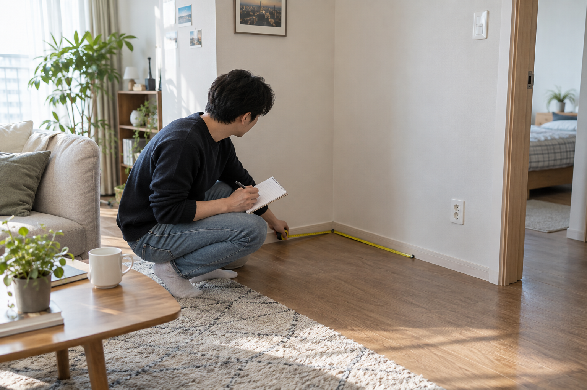
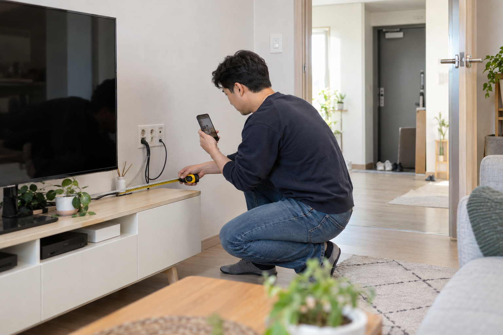

오락기 구매 전에는 정확한 제품명과 기본 구성, 원하는 게임과 이용 인원, 설치 공간과 연결 환경, 배송 경로, 구매 후 문의 방법을 차례로 물어보세요. 질문할 제품의 판매 페이지와 설치 자리 사진을 함께 준비하면 서로 다른 상품이나 옵션을 혼동하지 않고 답을 확인하기 쉽습니다.

제품명과 실제 구성을 먼저 확인하세요
상품 링크와 정확한 제품명을 보내고 본체, 조작부, 전원·화면 연결선 등 기본 구성품과 별도 구매 항목을 구분해 물어보세요. 같은 계열의 제품도 옵션에 따라 구성이 달라질 수 있으므로 기억에 의존하지 말고 문의 시점의 판매 페이지를 기준으로 확인해야 합니다.
제품명과 기본 구성, 별도 구매 항목을 나눠 물어야 답변을 정확하게 비교할 수 있습니다.
구성품을 확인하는 관점은 가정용 오락기 구매 전 체크리스트에서도 이어서 볼 수 있습니다.
원하는 게임과 이용 인원을 구체적으로 말하세요
하고 싶은 게임은 ‘옛날 게임’처럼 넓게 표현하지 말고 정확한 제목과 기억하는 버전을 적으세요. 혼자 사용할지, 두 사람이 동시에 할지, 가족과 번갈아 할지도 함께 알려야 조작부 형태와 게임 포함 여부를 제품별로 확인할 수 있습니다.
원하는 게임명과 이용 인원을 함께 알려야 필요한 구성을 구체적으로 확인할 수 있습니다.
구매 전에 게임을 확인하는 방법은 원하는 게임이 들어 있는지 확인하는 방법을 참고하세요.

설치 공간과 배송 경로를 함께 알려 주세요
설치할 자리의 폭·깊이·높이, 콘센트와 TV 입력 단자의 위치, 현관부터 설치 자리까지의 문 폭과 문턱을 재어 사진과 함께 전달하세요. 측정값은 제품 치수와 반입 가능 여부를 비교하는 자료이며, 최종 판단에 필요한 항목은 판매자에게 다시 확인해야 합니다.
설치 자리와 반입 경로의 측정값을 함께 전달하면 배송 전 확인할 항목이 분명해집니다.
공간을 재는 순서는 가정용 오락기 설치 공간 측정법에서 확인할 수 있습니다.
- 설치 자리의 폭·깊이·높이
- 콘센트와 TV 입력 단자의 위치
- 현관, 복도, 방문과 엘리베이터의 통과 폭
- 계단, 문턱과 가구처럼 이동을 막는 요소
구매 후 문의 방법도 미리 확인하세요
노리박스 제품 페이지에는 스탠드형부터 TV 연결형, 게임팩과 액세서리까지 구분되어 있고, 상담 안내에서는 설치 공간과 함께 즐길 사람을 알려 달라고 안내합니다. 문의할 때 제품 링크, 설치 공간, 사용할 사람과 원하는 게임을 한 번에 정리하고 구매 후 연락할 경로와 필요한 기록도 확인하세요.
구매 후 문의할 연락 경로와 준비할 기록을 미리 알아두면 문제 상황을 설명하기 쉽습니다.